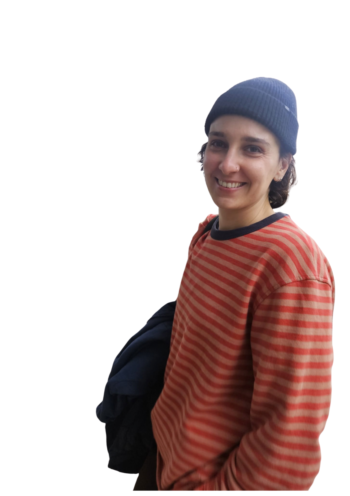
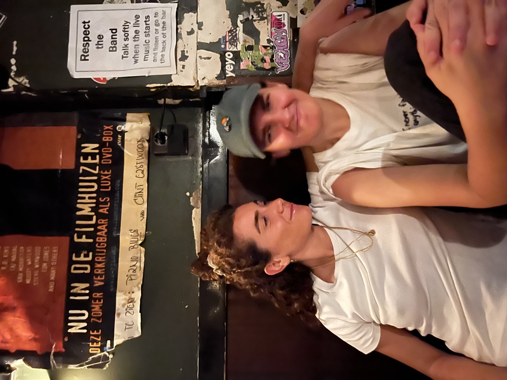
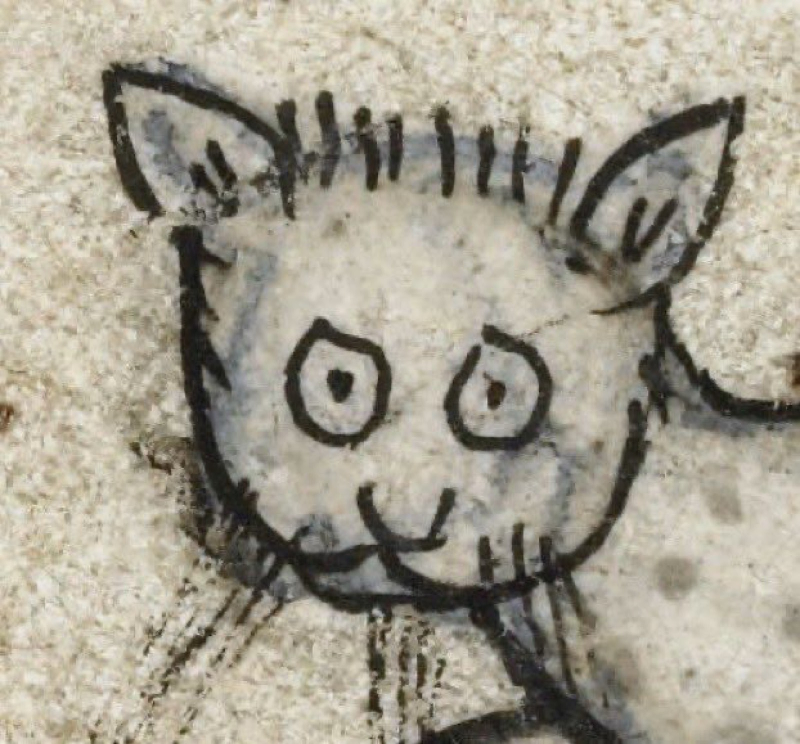
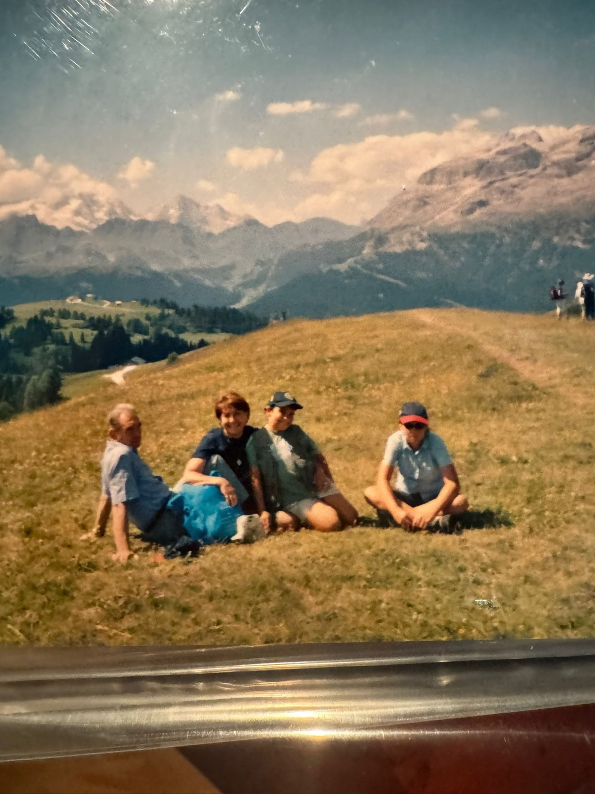
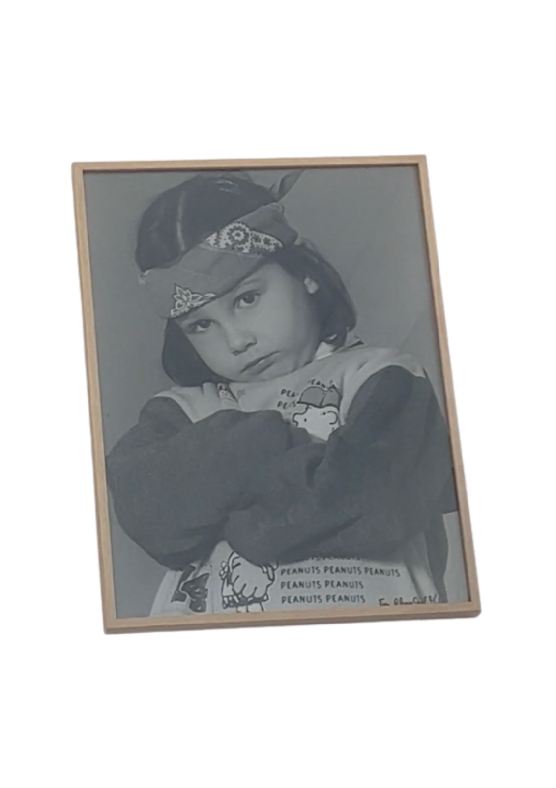
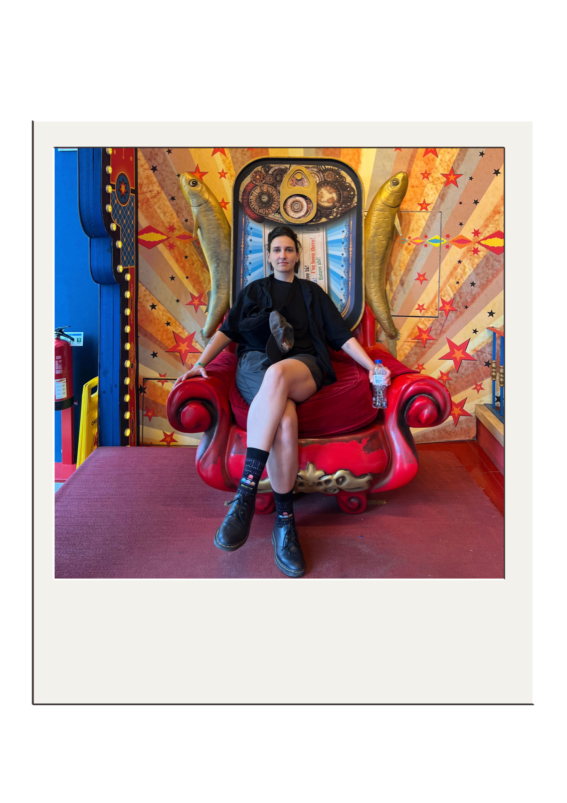
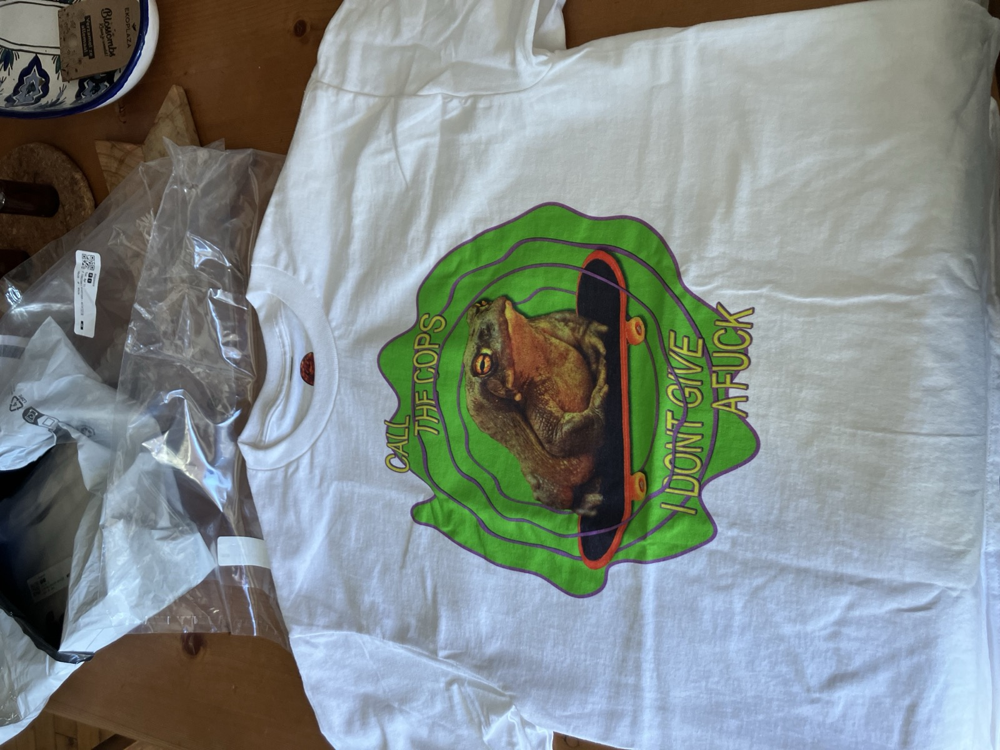

small boat sort of ok
—
music, people, places, nonsense.
hey, thanks for being here! i’m cam.
i’ve been writing songs to make sense of things, the good, the messy, the shitty, for quite a while. although, to be fair, i have a hard time actually finishing them.
most of the time, i write and record on my iphone or in ableton live. i’m a total production noob -- thought you may want to know -- but i hope to get better at it.
that said, with this whole ai vibe going on, i kind of like the raw and messy atmosphere that uncurated or lightly produced recordings can bring. there’s an intimacy and tangibility to them that i miss in a lot of today’s production. at least the stuff that reaches the charts, which isn’t really where i want to be musically anyway.
i want my music to feel almost tactile. rugged. textured. not flat or too perfect.
i don’t like perfect stuff. it’s boring.
apart from music, i'm into a lot of stuff: ceramics, photography, studying new things, food, and i have a small, solo-led marketing agency.



i was born in baltimore, but i lived most of my life in rome. i’ve studied music and singing unprofessionally for a very long time. basically since i was seven, and i’m 31 now.
i started with piano. then the nuns at the catholic school i was attending heard me sing and decided i was apparently good enough to be put at the front of the choir. after that, they thought it would be a great idea to push me onto a stage in front of hundreds of parents and children during the christmas show, with absolutely zero psychological preparation.
when i walked out, i froze. like, fully froze. my voice just stopped coming out. lol.
so yeah, ever since then, i’ve been scared shitless of performing in front of other people.
i really hope i’ll get over it soon, because i do actually want to share music and have fun with it. singing in my bedroom or in front of two friends is not enough anymore.
i also took music production courses in both italy and the netherlands, but i never finished them because they were very edm-focused. i like edm, but it’s not really what i want to focus on musically (see the influences section).


i have a lot of musical influences, which is cool, but also kind of a problem because i have a tendency to mimic people’s styles and voices.
some people think my voice is “perfect for jazz.” chet baker and julie london are probably my favorite vocalists, and i love how smooth and precise they sound without feeling overdone.
other people think my folky era suited me best, which was very joni mitchell / nick drake / josé gonzález influenced.
i, personally, have absolutely no idea.
and honestly, that’s kind of why i’m here. i’d like to find my own musical path and artistic identity before i start trying to make anything too concrete or polished.


sounds, artists, and ideas that shape what i make
if i had to choose the music that has influenced me the most, and that probably still does, it would be something like this:

chet baker sings

julie is her name

so tonight that i might see

my woman

orbit

salad days

blue

pink moon

come away with me

untourable album

masterpiece

mrs magic

sometimes i sit and think, and sometimes i just sit

i need to start a garden

their satanic majesties

berlin

the velvet underground & nico
this is probably the closest to the kind of sound i’d like to explore for myself or with a band right now.
dream pop? soft rock? indie? boh. something around there.
i’d also really like to make something more electronic / dancey as a separate project at some point.
the playlist i have for this is probably a much better explanation than i can give in words. give it a listen.